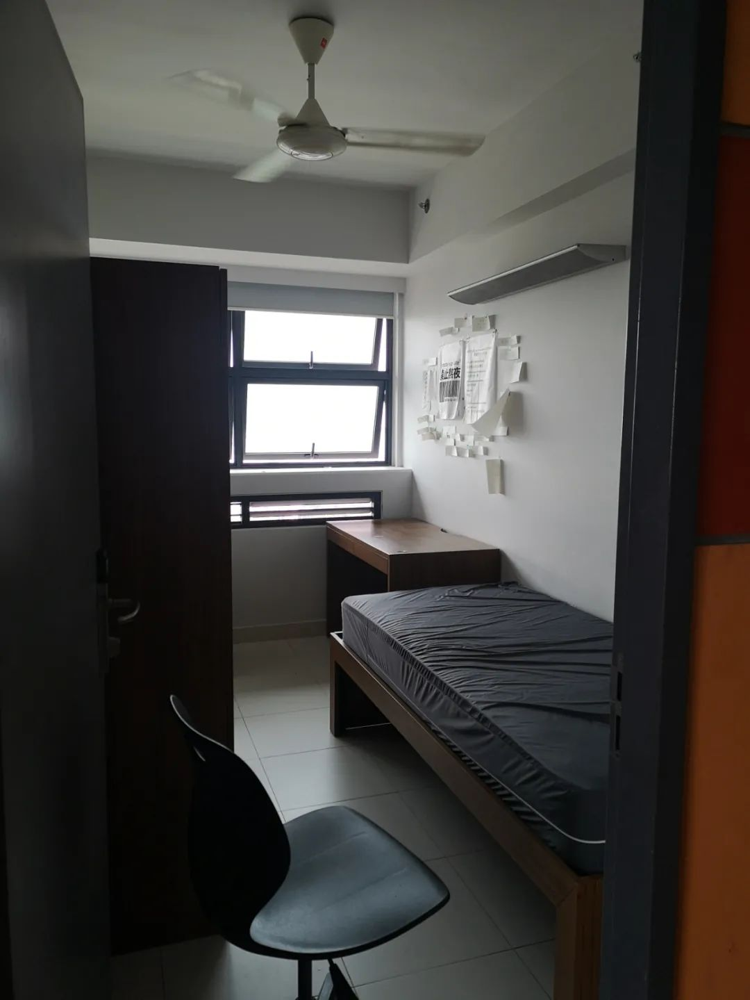

搬着电脑坐到空调底下开始码字，因为能坐着打字的桌子在空调底下。顺便还可以连上有线网络，兴许和世界的连接会变得更聪明一些。还用上了之前准备的VGA线路，这样可以把不远处的电视机屏幕也当成我的分屏。虽然与其用电视机屏幕修图，和用座机修图修出来的一个样，但是如果要是说到看电影，那还是大屏比较舒服一些。《困在时间里的父亲》汉尼拔博士和令人不安的Anthony
坂元裕二的新剧在之前的推文里解释过了，与期待不符。搁置。
书的话在看《H档案》，说的是阿尔及利亚这个特殊的地方，H指代的是Homer译作荷马。阿尔及利亚是一个神奇的地方，多方角逐，之前在《忧郁的热带》里看人类学的旅程也经常提及阿尔及利亚的港口。荷马史诗和《奥德赛》、《伊利亚特》，作为本书中两个爱好者追寻游吟诗人的方向。我还才看到第三章，但是内容载体是吸引我的。这些大多是还在新加坡的时候写的。有些话，写的时候的心情都已经忘记了，只留下一个记述的tip来当做引子。比如现在，连这些引子也忘了，去复刻复现、重新咀嚼也就成了无根之水无稽之谈。蜗牛从土里钻出来我倒是记得，因为总在下雨天的时候看到。兴许是在土壤里因为雨水渗透而限制了呼吸的可能，于是蜗牛来到被雨水带走了热量的地面上，在路过的地方留下一道黏液。有些人careless得很，因此在街道上多了许多蜗牛的尸首、碎裂的壳。就好比精心建筑的房子塌陷了，尔后住在里边的人疯狂地拥挤朝外。这些人原本行动速度就很慢，一别三回头地看着已经泥沙俱下（取本义）的房屋，挥泪留下痕迹作为离开的印记。生活的雨水洗脱，印记全无；生活的车轮轧过，分崩离析。我在UTown的寝室里，除了刚搬进寝室的那会儿之外，都只有在客厅里才会穿拖鞋和袜子。要么就是极特殊的时候，来不及换鞋子了就在门口的鞋垫上随便擦一擦，进去拿了东西就走。还有一个时间我也会穿上鞋袜进去，那是我离开这间寝室的一天。穿着鞋子进去把行李箱拿走，把正在录制的电脑带出来。我说我不管住到哪里，但凡时间超过三个礼拜一个月，我都想在那个地方留一点我住过的痕迹。就是，这个地方怎么才能和之前不一样呢？怎么说这里是我住过的而不是别人住过的呢？所以我最后留在寝室的是《禁止熬夜》和《健康的生活作息》这两张布，以及一堆我在住在这里的时候，随缘贴在墙面上的一些句子：
摘一段确认了袁院士离开的时候，我写在备忘录里的话：2013年第一次见袁院士，是在进入雅礼读高中的前夕。人生中见过的第一位院士、国士。
有时候就在想：那一代人在如此艰苦的环境下还奠定了民族的脊梁并一直影响后人，我们又在做什么？当然可以说：他们的努力是为了让我们有一个更优渥的环境。那问题是，我们享有这样的环境自己又做了些什么？不管是时序地承上还是启下，又做了什么呢？现在博一读完了，回了广州，成为一名PhD在逃。我是问：有什么理由不真正面向一些有需求、有战略地位的东西展开研究，而每天在为了论文毕业要求和办公室政治在这边蝇营狗苟？我看不行。现在的确是在，很摇摆而又波折的时期。虽然可以有勇气有思虑地去做决定，我拿得准倾向，但真正要付诸行动的时候仍然考量甚多。看到院士离开的消息，觉得愈发不可以拖拉：高山仰止，景行行止。虽不能至，然心乡往之。以前是被教育说：你们应该如何如何，有什么样的先进事迹可以去学习、模仿。但是现在是真的也在这么想。私以为这段有点像南京市民在通气会上说的那样：这个世界会好吗？现在我是真的觉得，这个世界会好的。写这一段说明不在于，以前说这样的话有多么违心或者类似于受到强迫，而在于以前对一个事情的理解没有那么深刻。就同于很多人可能对科研的爱好，对一个学科的喜欢首先来自于这门课的任课教师：比如自己的历史老师是一位学识渊博、很儒雅而且很有风范的老师，讲课讲得深入浅出，说不准这个起点到底是因为老师的人格魅力感召、还是说究竟在这个学科内有多少喜欢。但随着在这个学科内的深入，慢慢地自己也因为学科的训练而成长为了一个可以独当一面的人。这时候对学科的态度，印象中还能隐约有着初上路时的那份心，但实际上已经脱离了束缚，变成了像遥远星辰一样照耀的力量，而同时自己在发光。前几天一叶小舟在力量给予时，吟诵了这一句：悟已往之不谏，知来者之可追。实迷途其未远，觉今是而昨非。祝诸事顺遂有些梦想主义。祝力量不竭亦如是。